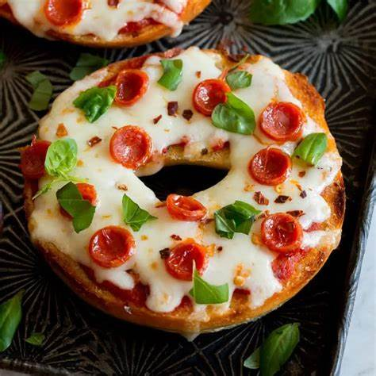
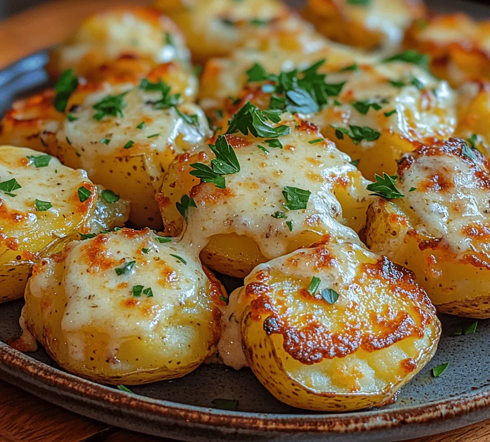
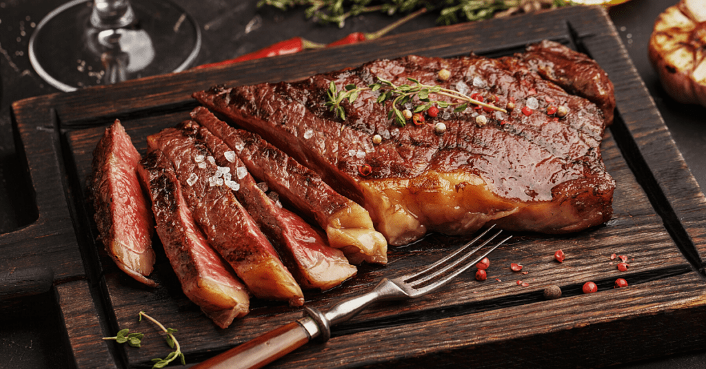
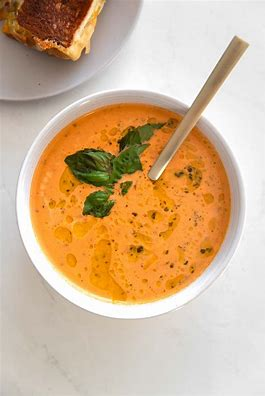
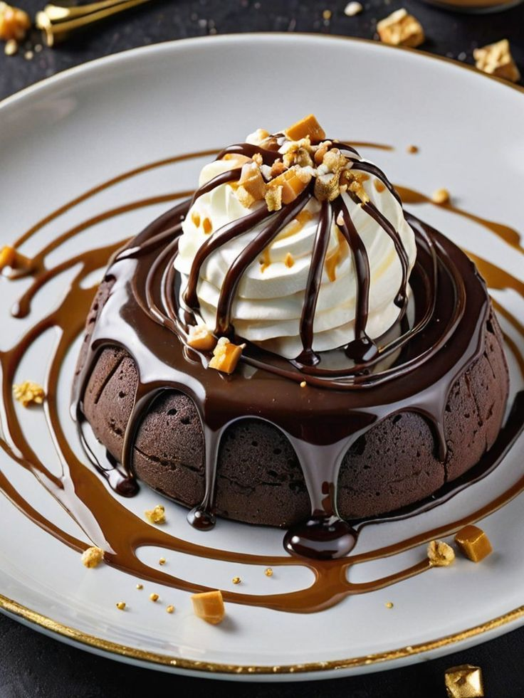
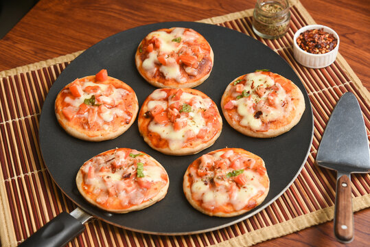
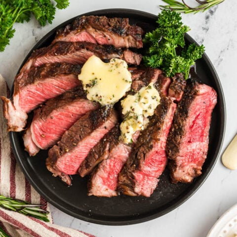
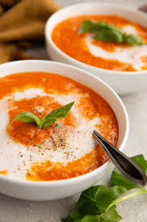

Flavorful Blog
A quick and easy recipe made with simple ingredients and packed with flavor—perfect for any meal!
Kids Menu
Mini Pizza
Sides
Mashed Potatoes
Entrees
Grilled Ribeye Steak
Appetizers/Straters
Tomato Basil Soup
Dessert
Chocolate Lava Cake
×

If you're a pizza lover (who isn't?), then mini pizzas are your new best friend. These
bite-sized delights are perfect for snacks, parties, or even a fun dinner night with the family.
The best part? You can customize them however you like — classic
pepperoni, veggie-loaded, or even a dessert version with Nutella and strawberries!
Mini Pizza Magic
Big Flavor in Small Bites 🍕
×
Mashed Potatoes
Simple, Soulful, and Always Satisfying
×

There are steaks… and then there’s garlic ribeye.
Thick, juicy, and marbled to perfection, a good ribeye is already a showstopper. But when you introduce golden,
caramelized garlic into the mix? You’re leveling up to something downright irresistible.
Garlic Ribeye Steak
Where Bold Meets Buttery Perfection
×

Basil soup is like a breath of fresh air in a bowl. It’s light yet flavorful, soothing but never boring.
With the vibrant green of fresh basil leaves and a delicate blend of aromatics, this soup is where simplicity
meets elegance.
Basil Soup
A Bowl of Freshness and Comfort
×

🍫 Lava Chocolate Cake
A Molten Masterpiece